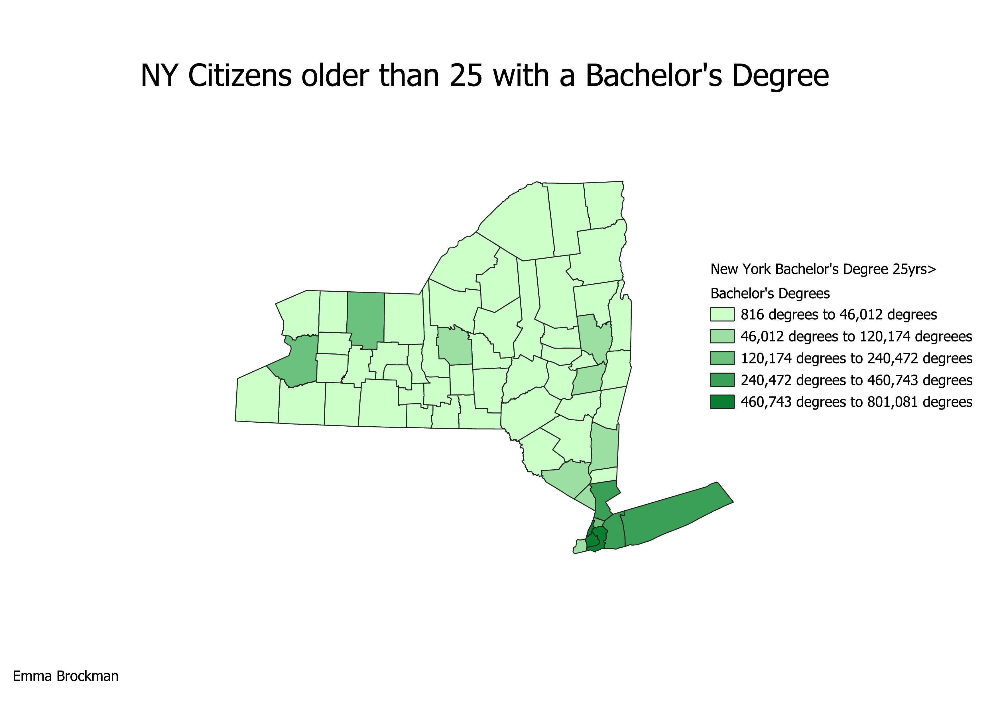

Homework 6: Census data choropleth
Welcome to my Homework 6 page!
For this assignment, I wanted to look at educational attainment in the state of New York. I chose to look at this statistic
as I've had multiple family members commit themselves to the educational system in New York City. Additionally, I wanted to analyze said attianment from a collegiate standpoint.
After a US census search, I was able to find a CSV set detailing Bachelor's degrees per counties from 2022. There were multiple different sets within the entire CSV that broken down Bachelor's degree attainment levels by age, race, gender, etc., but for purposes of this assignment, I decided I wanted to purely examine Bachelor's degrees as a whole. The image below represents a comparison between New York counties and how many of their citizens have acquired Bachelor's degrees. One can see that the majoirty of counties only have a maxiumum of 46,012 degrees. Before joining the data together, I assumed most counties would fall into the "46,102 degrees to 120,74 degrees", but I was wrong! Aside from that, the map looks similar to what I predicted.

Data used for this project
CSV dataset
Link to shapefile